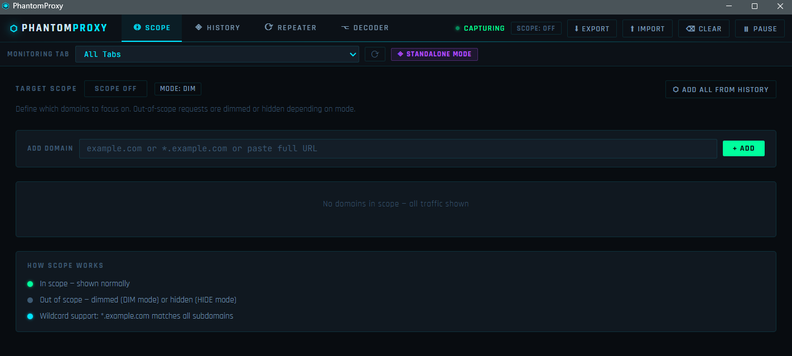
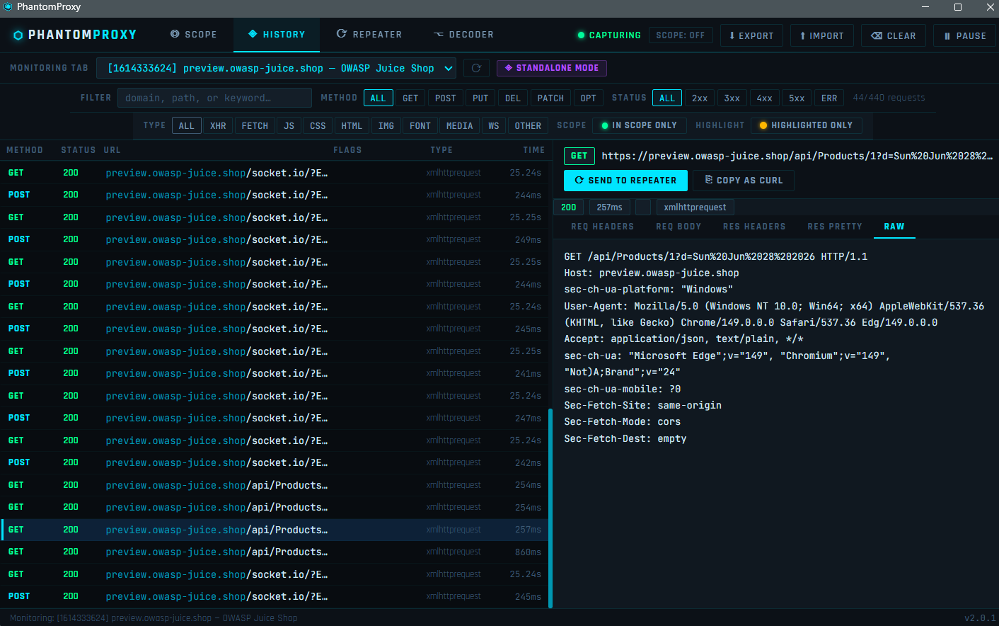
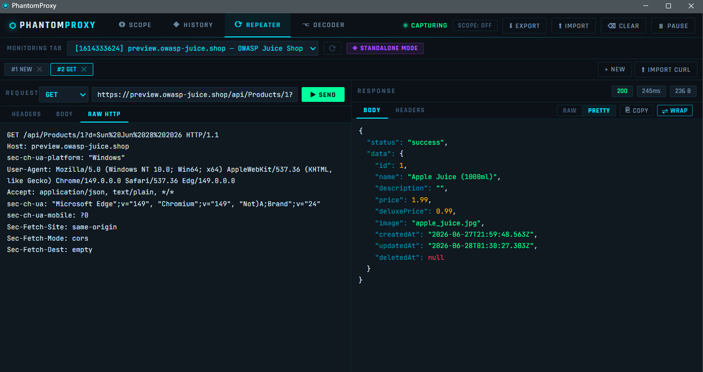
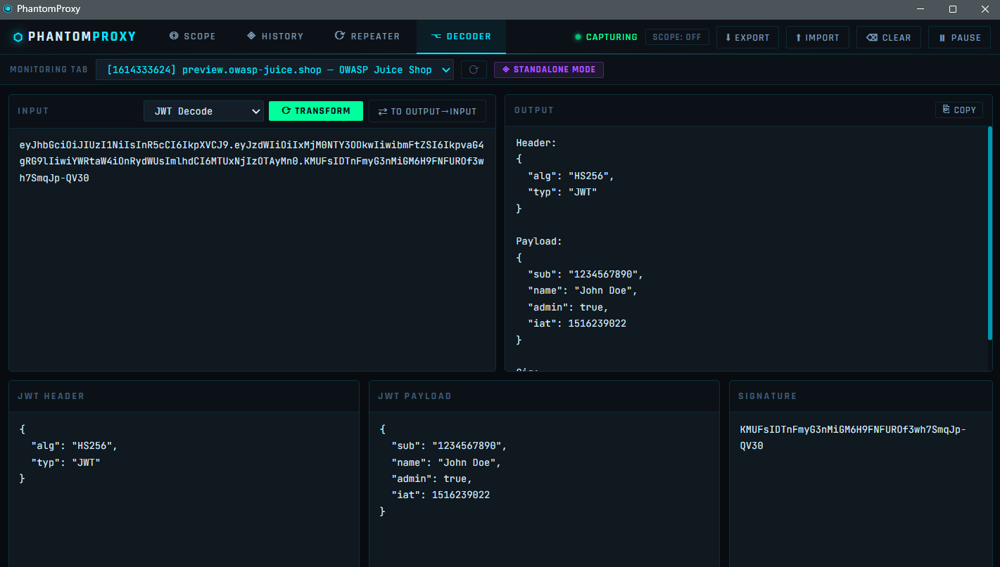

A cyberpunk-themed HTTP traffic inspector and request repeater — browser DevTools extension for Microsoft Edge and Chrome. Built for developers, security researchers, and bug bounty hunters.
What is PhantomProxy?
PhantomProxy is a lightweight in-browser security testing tool inspired by Burp Suite's proxy and repeater workflow. It captures all HTTP/HTTPS traffic from your browser tab in real time, lets you inspect every request and response in detail, replay and modify requests, decode tokens, manage your test scope, and bookmark interesting findings — all without setting up a system proxy, installing Java, or leaving your browser.
Installation
Microsoft Edge Add-ons Store
Search for PhantomProxy on the Microsoft Edge Add-ons store and click Install.
Manual Installation from GitHub
Clone the repository from GitHub and follow the installation instructions.
Load Unpacked (Developer Mode)
- Download and extract the
phantom-proxy.zip - Open
edge://extensions/(orchrome://extensions/) - Enable Developer Mode (top-right toggle)
- Click Load unpacked and select the
phantom-proxyfolder - Open any page → press F12 → click the PhantomProxy tab in DevTools
Standalone Window
Click the PhantomProxy icon in your toolbar → click ◈ EXECUTE to open PhantomProxy as a full dedicated window. Ideal for a second monitor or a focused testing session.
Features
◎ Scope Tab
Define exactly which targets you care about before you start testing.
- Add domains manually, paste a full URL (hostname is auto-extracted), or click ADD ALL FROM HISTORY to pull every domain from your current capture into scope in one shot
- Wildcard support —
*.example.commatches the root domain and all subdomains - Two display modes: DIM (out-of-scope requests stay visible but greyed out) or HIDE (removed entirely)
- Scope state persists across sessions via browser storage — your targets are remembered when you reopen DevTools
- Scope badge in the topbar always shows current state at a glance
◈ History Tab
Passive, real-time capture of all HTTP/HTTPS traffic — no proxy configuration required.
Capture
- All requests captured via the browser's
webRequestAPI the moment the panel opens - Up to 500 requests stored in memory, oldest dropped when limit reached
- ⟳ RELOAD PAGE TO CAPTURE FROM START nudge — reloads the inspected tab so you never miss the initial page load requests
- Pause / Resume capture without losing history
- Clear all with one click
Filter Bar — Row 1
- Free-text search across full URLs (domain, path, query string)
- Method filter chips: ALL · GET · POST · PUT · DEL · PATCH · OPT
- Status code filter: ALL · 2xx · 3xx · 4xx · 5xx · ERR
- Live request counter showing filtered vs total
Filter Bar — Row 2
- Type filter (multi-select): ALL · XHR · FETCH · JS · CSS · HTML · IMG · FONT · MEDIA · WS · OTHER — select any combination simultaneously
- IN SCOPE ONLY chip — instantly restricts the list to your defined scope domains, independent of the global DIM/HIDE mode
- HIGHLIGHTED ONLY chip — shows only bookmarked/highlighted requests
Request List
- Each row shows: method, status code, URL (domain highlighted separately from path), auto-detected FLAGS badges, resource type, and timing
- Color-coded left border stripe on highlighted rows
- Three-dot hover indicator on every row — right-click to bookmark
Auto-highlight FLAGS PhantomProxy automatically detects and badges interesting requests:
| Badge | What it detects |
|---|---|
| JWT | JWT token in any request header |
| API KEY | x-api-key, api_key= parameter |
| AUTH | Bearer / Basic auth headers |
| ADMIN | /admin, /dashboard, /console, /manage paths |
| SENSITIVE | /password, /reset, /token, /config, /.env |
| UPLOAD | File upload endpoints, multipart/form-data |
| 403 | Forbidden responses — worth testing for bypasses |
| 5xx | Server errors |
| SQL? | SQL patterns in request bodies |
| GraphQL | /graphql endpoint or mutation/query body |
| WS | WebSocket connections |
Request Detail Pane Click any row to open the full detail view:
- REQ HEADERS — all request headers in a clean key/value table
- REQ BODY — raw request body
- RES HEADERS — response headers
- RES PRETTY — re-fetches the request and renders the response with full syntax highlighting (JSON keys, strings, numbers, booleans, null each in a distinct color; XML formatted and indented)
- RAW — full raw HTTP request reconstruction
- ⟳ SEND TO REPEATER — sends the request to a new Repeater session
- ⎘ COPY AS CURL — copies a shell-ready cURL command to clipboard
Bookmark / Highlight System Right-click any request row to open the highlight menu:
- 8 color swatches: Red, Orange, Green, Cyan, Blue, Purple, Yellow, Pink
- Optional text note attached to the bookmark (shows as tooltip)
- Remove highlight option
- Bookmarks persist across sessions
- Use HIGHLIGHTED ONLY filter to isolate bookmarked requests
Export / Import
- ⬇ EXPORT — exports all captured requests as a HAR 1.2 file, compatible with Burp Suite, Chrome DevTools, Postman, and any HAR-aware tool
- ⬆ IMPORT — imports a
.harfile and adds all entries to the history list
⟳ Repeater Tab
Edit and replay any captured request, or build one from scratch.
Sessions
- Multiple named sessions — tabbed like Burp Suite's repeater, each independent
- Sessions persist their last response while you switch between them
- + NEW to create a blank session
- Close sessions with ✕
Request Editor
- Method dropdown + URL bar + ▶ SEND button (
Ctrl+Enterto send) - HEADERS tab — key/value row editor, add/remove individual headers
- BODY tab — body textarea with Content-Type selector (JSON, Form URL Encoded, Multipart, Plain Text, XML) and ⌥ FORMAT to auto-indent JSON
- RAW HTTP tab — edit the full request as raw text
cURL Import Click ⬆ IMPORT CURL to paste a cURL command directly into the Repeater. Supports:
-Xmethod, multiple-Hheaders,-d/--data/--data-rawbody-u user:passbasic auth (auto-converted to Authorization header)-bcookie headerCtrl+Enterto import
Response Viewer
- Status code, response time, response size in meta pills
- BODY tab with RAW / PRETTY toggle
- PRETTY renders JSON with full syntax highlighting and XML with indentation - PRETTY button is disabled and dimmed when the response is not a prettifiable format
- HEADERS tab — response headers in key/value table
- ⎘ COPY — copy raw response body to clipboard
- ⇌ WRAP — toggle word wrap for long minified responses
⌥ Decoder Tab
Built-in encoder/decoder for common security research transforms.
| Operation | Description |
|---|---|
| Base64 Decode / Encode | Standard Base64 |
| URL Decode / Encode | %xx percent encoding |
| HTML Decode / Encode | HTML entity encoding |
| Hex Encode / Decode | Hexadecimal byte encoding |
| JSON Format | Pretty-print and validate JSON |
| JWT Decode | Splits header, payload, signature — flags alg: none and HS256 with a warning banner |
| SHA-256 Hash | Via Web Crypto API |
Chain mode — ⇄ button pipes the output back into the input for multi-step transforms (e.g. Base64 decode → URL decode in two clicks).
Keyboard Shortcuts
| Shortcut | Action |
|---|---|
Ctrl + Enter | Send request (when focused in Repeater URL/body/raw) |
Ctrl + L | Clear history |
Ctrl + F | Focus the URL filter input |
Architecture
phantom-proxy/
├── manifest.json # Manifest V3 — no "type: module" (required for webRequest)
├── background/
│ └── worker.js # Classic service worker: traffic capture, repeater fetch, keepalive
├── devtools/
│ ├── devtools.html # Registers the DevTools panel
│ └── devtools.js # chrome.devtools.panels.create()
├── panel/
│ ├── panel.html # Full UI shell
│ ├── panel.css # Cyberpunk dark theme
│ ├── panel.js # Core UI logic, state management, message handling
│ └── features.js # v2 feature module: scope engine, highlight rules, HAR export/import, cURL parser
├── popup/
│ ├── popup.html # Toolbar popup with Execute button
│ └── popup.js # Opens standalone window via chrome.windows.create()
└── icons/
├── icon16.png
├── icon48.png
└── icon128.pngHow traffic capture works
PhantomProxy uses the browser's webRequest API — a passive observation API that fires events for every HTTP request without intercepting or blocking traffic.
Page makes request
↓
onBeforeRequest → captures URL, method, request body
onSendHeaders → captures request headers
onHeadersReceived → captures response status + headers
onCompleted → finalizes timing, pushes to requestStore
↓
broadcastToDevtools() → postMessage to panel port
↓
Panel renders row in History tabThe background service worker stores up to 500 requests in memory and broadcasts each completed request to all connected panels (both DevTools and standalone) via chrome.runtime.connect ports.
Repeater requests are fired from the background worker using fetch() — this bypasses CORS restrictions that would block requests from the panel page context.
Security design
- No data leaves the browser — all captured traffic stays in local memory, never sent to any server
- SSRF protection — Repeater blocks
file://,javascript:, and all private IP ranges (127.x, 10.x, 172.16–31.x, 192.168.x, 169.254.x, ::1, fc00::, fe80::) - CRLF injection prevention — all header names and values strip
\r,\n, and\0before use - XSS prevention — all server-controlled values (URLs, headers, response bodies, status text) are rendered via
textContentor DOM construction, neverinnerHTML - Prototype pollution guards — all header objects use
hasOwnPropertychecks; sensitive objects useObject.create(null) - HTTP method whitelist — only known HTTP verbs accepted in Repeater
- Body size caps — captured bodies truncated at 64 KB, repeater responses capped at 2 MB
Permissions
| Permission | Why it's needed |
|---|---|
webRequest | To observe HTTP traffic — the core function of the tool |
tabs | To associate requests with the correct tab and populate the standalone tab selector |
storage | To persist scope definitions and bookmarks across sessions |
scripting | For DevTools panel integration |
webNavigation | To detect page navigation and handle request lifecycle correctly |
windows | To open PhantomProxy as a standalone window via the Execute button |
<all_urls> | To observe requests to any domain — required since security testing targets vary |
Notes
- Requires Microsoft Edge 88+ or Chrome 88+ (Manifest V3 +
webRequest) - Response bodies are not captured passively in the History tab — this is a browser platform restriction of the
webRequestAPI. Use the RES PRETTY tab or Repeater to re-send and read the response body - The extension does not intercept, block, or modify live traffic — it is purely passive observation + active replay
- Works on
http://andhttps://pages only - Extension pages (
chrome://,edge://,devtools://,file://) are excluded from capture
Privacy
PhantomProxy collects no data. All captured traffic is processed entirely within your local browser and is never transmitted to any server. No analytics, no telemetry, no tracking.
Full privacy policy: thevillagehacker.com/projects/Phantom-Proxy_privacy-policy.html
Screenshots
Scope Tab

History Tab

Repeater Tab

Decoder Tab — JWT Decode

Thank you for reading! If you give PhantomProxy a try, I'd greatly appreciate your feedback, suggestions, or feature requests. Every bit of input helps improve the tool and shape future releases. Happy hacking!